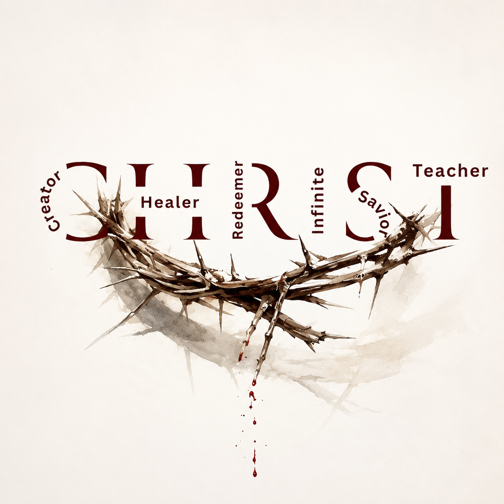

Elora Radiance Co. · Free
The Complete Words of Jesus
Every passage He ever spoke — organized by theme, studied in depth, carried into life. Not isolated verses. Complete passages.
Come to me, all who labor and are heavy laden, and I will give you rest. Take my yoke upon you, and learn from me, for I am gentle and lowly in heart, and you will find rest for your souls. For my yoke is easy, and my burden is light.
Matthew 11:28–30 · ESV · Theme: Peace & Rest
What's Inside
Not a verse-a-day devotional. The full passages Jesus spoke — every word, in context, organized by what He was actually teaching.
How It Works
Each passage opens into a complete study experience — not a devotional that skims the surface, but a full encounter with what Jesus said and meant.
"If you abide in my word, you are truly my disciples, and you will know the truth, and the truth will set you free."
John 8:31–32 · ESV — This is what The Red Letters is for.
Begin Today
Not ancient history. Not a theological reference. Addressed to you, right now, in your actual life.
✦ Open The Red Letters — FreeQuestions
Elora Radiance Co.
Scripture-based tools for every dimension of the Christian life.